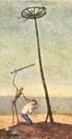

De: La Frikipedia, la enciclopedia extremadamente seria.
De: La Frikipedia, la enciclopedia extremadamente seria. De: La Frikipedia, la enciclopedia extremadamente seria.
|  | ATENCIÓN Este artículo está en La Picota. Su autor ha escrito un supertruño, que ni viene a cuento ni tiene puñetera gracia. |
Dícese del estilo de música en el que el autor se pasa toda la canción quejándose de sus amores. Ni una puta canción flamenca que no hable de amor. Se caracteriza por un tio diciendo "ayyyyyyy" cada 20 segundos, y otros tantos gritando "¡ole!".
Un cuadro flamenco se compone de: un tio que se cree que sabe tocar una caja pero no tiene ni puta idea, otro tocando la guitarra que es el unico que se oye y el tipico que tiene el pelo largo hasta el culo que cuando caga se le enreda en el zurullo y que no sabe ni cantar, porque lo unico que hace es prolongar las palabras para que la gente piense que la cancion dura mas, pero solo dura 1 minuto.
El tipico flamenquillo es el que lleva todo de oro, collares, sellos, pendientes, calzoncillos...y que siempre se deja palabras al hablar, ¿axo saes ka la pasao ar kilo der velxino?
Sin duda, hay muchas formas de bailar flamenco, aqui resumimos algunas:
Motivao/a: suele ser alguien que ya se ha tomado unas cuantas copas, y en un arranque sale a hacerel gilipollas demostrar sus grandes dotes artísticas. Ante esta situación, lo mejor que se puede hacer es sacar la cámara.
Que "baila bien": este especimen tiene cierto conocimiento en el flamenco, asi que tratará de bailar al son de la música. También hay que sacar a cámara, el flamenco no sabe bailarlo ni su padre.
IP anónima: sí, tu, que te tenemos vigilado. Te dicen que salgas, te muevas un poco y vuelves corriendo a tu sitio para dejar de hacer el ridículo. A no ser que seas uno de los tipos anteriores, lo único que harás después es dar palmitas como las focas y gritar ole.
Aparte de lo anteriormente mencionado, se conoce que el flamenco es invento de gitanos. Como a cualquier cosa le llaman música, pues un tanaco drogado hasta las cejas se forra en un show con menos ensayo que una caída de morros.
Es más un "estilo comercial" que se lleva entre Canis y Jennis.
El baile consiste en unos toxicómanos que dicen sentir la "musica" haciendo gestos de molestia, aunque expertos dicen que solo trata de un severo dolor de cabeza el cual no hayan como articular y solo lo drenan zapateando y colocando dichos gestos de marihuaneros.
Algo totalmente, estupido, no expresan sus sentimientos como debe ser, es algo que te provoca cortarte las venas.
Un dia un entrañable marroquí cometió la travesura de escaparse de su casa,cojer la barca inchable de su tio Manuel y pasearse por el estrecho con la mala suerte de naufragar en una peninsula desierta llamada peninsula iberica,Jatim se asusto mucho ya que en esa peninsula vivia una tribu de pelos largos,morenos y de mal olor.Que al ver al niño no se les ocurrio otra cosa que venderlo en el rastro con la mala suerte que nadie lo compro porque no estaba vacunado y la tribu decidió comerselo.El patriarca de la tribu Matamulas los puso en una olla gigante al baño de maria,cuando esto se empezo a calentar Jatim Al Garrobo (creador del flamenco) pego un grito ayyyyyyyyyy ke doloooo!!!!.La tribu nunca havia escuchado semejante ruido y quedaron fascinados le perdonaron la vida a Jatim y empezaron a autolesionarse para ver quien se quejaba mejor de aqui surgio también el movimiento emo.
El Flamenco siempre a sido una musica para gentuza ya que lo trajeron los moros desde marruecos y se lo regalaron a los gitanos.Los gitanos lo dieron a conocer por toda españa y los canis intentando imitarlos empezaron a escucharlo y de hay surjieron grandes abominacion,todo buen cani escucha flamenco en el mobil mientras que viaja en el metro con el altavoz del mobil(nada de usar lo auriculares),tambien podemos ver los tipicos que a las 4 de la mañana mientras que fuman porros y un gitano toca la guitarra comienzan a cantar flamenco (vease callejeros en ese programa salen muchos de estos individuos) y la tipica familia cani celebrando un cumpleaños en el rio todos bailando y cantando,en la carcel pudes escuchar mucho flamenco ya que todos los cantantes o bailaores flamencos han pasado por ella.
Autor(es):